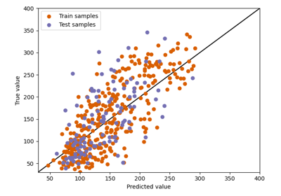

Basic Examples¶
Examples for basic classification, regression, multi-output regression, and multi-label classification datasets.



Regression
Examples for basic classification, regression, multi-output regression, and multi-label classification datasets.